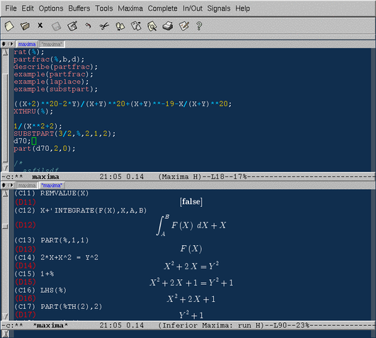
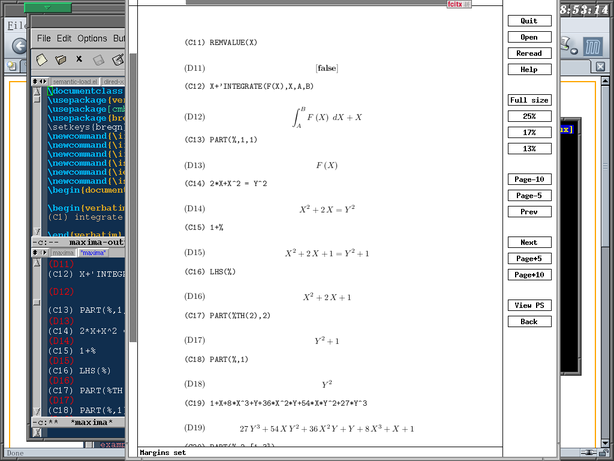

Maxima 本身为 Emacs 提供了一个 maxima-mode，具有语法加量，命 令补全等功能，但是它不支持图形显示输出。
Imaxima 弥补了图形显示空缺，但是它没有提供语法加亮，命令补 全……
没有两全其美的办法吗？有的。只要在 .emacs 文件里设置
(setq imaxima-use-maxima-mode-flag t)
maxima-mode 就可以把 Imaxima 作为它发送命令的目标，从而把语 句都送到 Imaxima 的 buffer 显示。
使用方法是，先启动 Imaxima: M-x imaxima，然后把一个 buffer 进入 maxima-mode. 这样，打完一个语句以后, C-c C-c 就可以把它 送到 Imaxima 那里处理了，得到 TeX 质量的输出。
只要使用 M-x imaxima-latex 就可以把结果输出成为 Latex 文档， 经过修改，交给 LateX 处理，效果别提有多好了。
需要注意的事项：

